Compressing Images¶
Please refer to Getting Started document to get additional information on how to use sample projects
After adding the destination settings for the image, select the preset setting and click on “Process” button or right click over the preset setting and click Process <name of the compressed file>
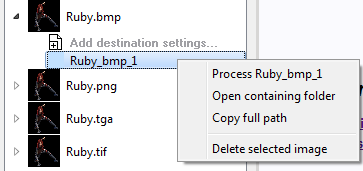
If you want to process all the settings that are set for an original image, right click over the root image and click Process all setting for <Original image file name>. For instance, example below will process and generate result for Ruby_bmp_1 and Ruby_2.
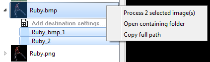
When compression process begins, a Progress window and an Output window will appear.
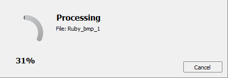
When the compression process completes, the Project Explorer will change to indicate the status of the resulting compressed Ruby_bmp_1 image with a small green (succeeded) or red circle (failed), and the Output window will indicate additional information on the succeeded or failed compression process.


Converting Image Formats¶
Converting an image to a different format of similar or like quality (Transcode)
Add the image to the project explorer
Add a new destination item setting with a format of ARGB_8888 (applies to most images) unless the original image is HDR in which case select ARGB_32F.
Note: The application cannot currently convert between source and destination variations of ARGB_8888 and ARGB_32F formats
Now set the desired destination file extension from the supported list
Process the destination item
Using the Make Compatible Feature¶
With the GPU or CLI tools, users can compress HDR and LDR images using any BCn codec without specific knowledge of the source format. For example, HDR images can only be compressed by BC6 any attempt to use BC1 to BC5 or BC7 will fail compression. Transformations are automatically handled to make the image source format compatible with the encoder when using the CPU or GPU based encoding.
Compressonator performs auto conversions of FP16 to Byte and Byte to FP16 formats when encoding textures with GPU or CPU encoders. A pre-conversion of the source data is performed into a temporary buffer which is then sent for processing, once the processing is completed the buffer is removed.
To see how this works, try processing an EXR file format image to compress with formats like BC1 to BC5 or BC7 using the “Encode with” option for HPC, GPU_DirectX or GPU_OpenCL If you are unfamiliar with how to process textures, check the tutorial on “getting started using sample projects”.
Compressing Signed Channel Images¶
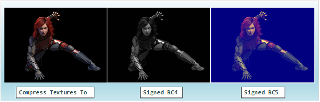
Signed channel component processing is available in the Compressonator SDK, Command-Line, and GUI applications.
This supports processing textures from 8-bit unsigned or signed channels to BC4 and BC5 formats.
In the GUI the process is no different than that described for compressing images using the project explorer. Image views will show additional status information about the signed channel data and how it is rendered onto the image views as unsigned channel formats.
For BC4 and BC5 encoding as a signed component use the destination settings option as BC4_S and BC5_S
Decompressing Textures¶
Compressed images can be added to the project view as original items and viewed with the Image Viewer.
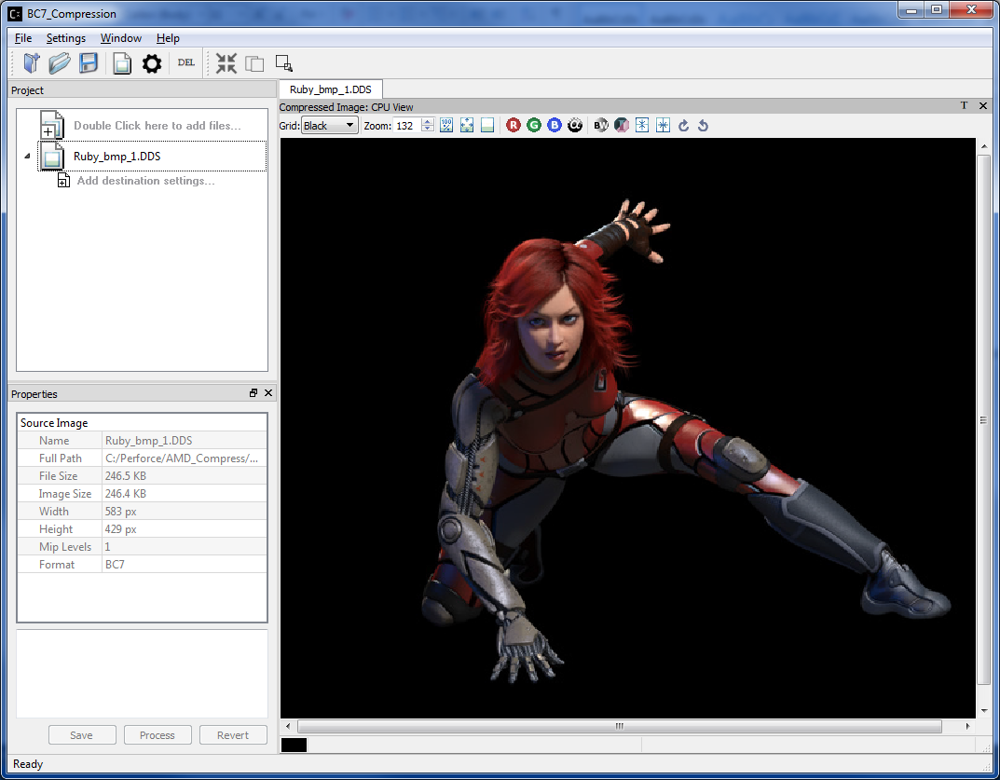
BC7 Compressed Image View of Ruby view as original image
Additional destination item settings can then be added to decompress the original item to a new format such as BMP, PNG etc.
Note: Compressed images used as original image cannot be recompressed to a new compressed destination, the selections are still enabled for support in future versions.
In the example below, a BC7 compressed image ruby is uncompressed to ARGB 8888 format and saved as a KTX file.
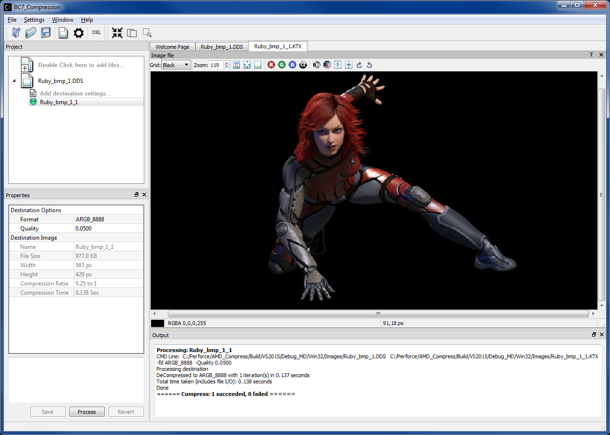
Ruby DDS file saved as a KTX file
Improving Compression Quality¶
The application allows multiple variation in processing a source image with a number of different image compression techniques. Each having specific quality and performance results.
By cycling different options between compress formats, quality setting and examining the image differences and views, users can quickly determine what works best for their image samples.
Channel weighting¶
Channel weighting option (X Red, Y Green and Z Blue weighting) enabled on compression destination setting for supported Compression Codecs.
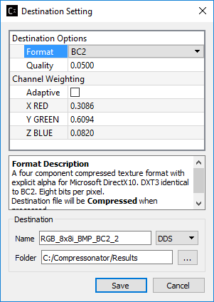
Users can edit the color channel weight ratio (total is 1.0000) by editing the value on each channel. Each channel has their default value (recommended value) set.
Alpha setting enabled for BC1 (DXT1)¶
Alpha setting enabled for DXT1/BC1 compression
For DXT1/BC1 compression format, users can choose to enable/disable the alpha channel in the compression. It is disabled by default.
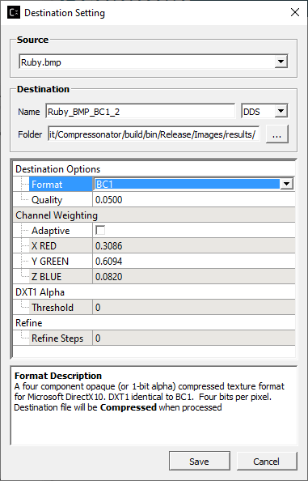
HDR Properties setting¶
HDR Properties setting enabled for half float and float type images (for HDR view support)
For HDR floating point images, users can choose to adjust the exposure, defog, and knee low as well as knee high properties of the display images. It is disabled by default.
It can be enabled and shown by choosing the “HDR Properties…” from the “View…” drop down list:
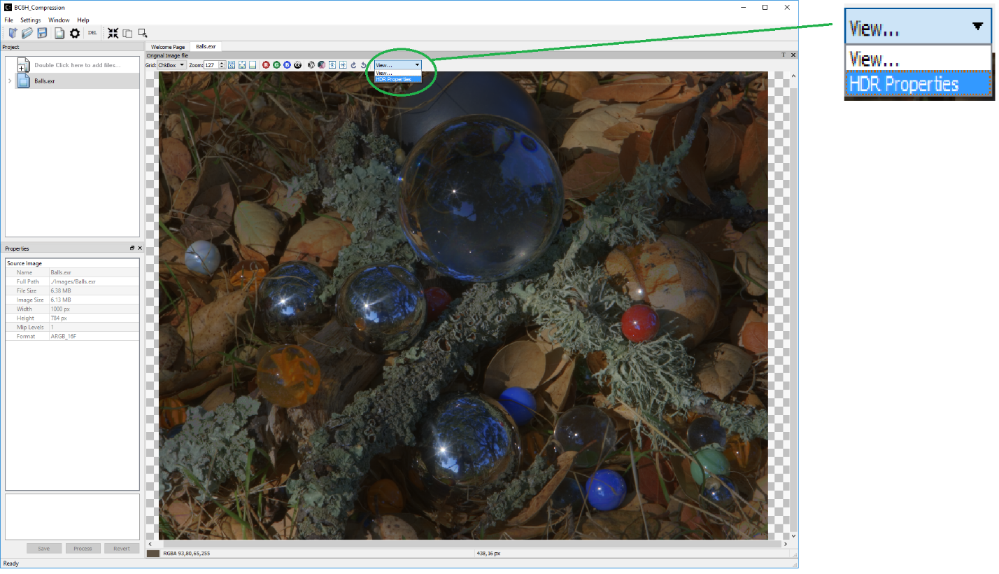
After clicking on “HDR Properties…” the window below will pop up:
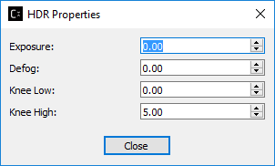
ETC2¶
Compressonator supports ETC2 formats that are based on the following standards:
| CMP | Vulkan | DirectX | OpenGL |
|---|---|---|---|
| CMP_FORMAT_ETC_RGB | VK_FORMAT_ETC2_R8G8B8_UNORM_BLOCK | DXGI_FORMAT_UNKNOWN | GL_COMPRESSED_RGB8_ETC2 |
| CMP_FORMAT_ETC2_RGB | VK_FORMAT_ETC2_R8G8B8_UNORM_BLOCK | DXGI_FORMAT_UNKNOWN | GL_COMPRESSED_RGB8_ETC2 |
| CMP_FORMAT_ETC2_RGBA | VK_FORMAT_ETC2_R8G8B8A8_UNORM_BLOCK | DXGI_FORMAT_UNKNOWN | GL_COMPRESSED_RGBA8_ETC2_EAC |
| CMP_FORMAT_ETC2_RGBA1 | VK_FORMAT_ETC2_R8G8B8A1_UNORM_BLOCK | DXGI_FORMAT_UNKNOWN | GL_COMPRESSED_RGB8_PUNCHTHROUGH_ALPHA1_ETC2 |
The GUI and Command Line formats are specified as:
| GUI and CLI | SDK |
|---|---|
| ETC_RGB | CMP_FORMAT_ETC_RGB |
| ETC2_RGB | CMP_FORMAT_ETC2_RGB |
| ETC2_RGBA | CMP_FORMAT_ETC2_RGBA |
| ETC2_RGBA1 | CMP_FORMAT_ETC2_RGBA1 |
Process results for image with alpha channel:
Using the image sample ruby_alpha.tga, add compression setting for ETC2_RGB, ETC2_RGBA and ETC2_RGBA1 and process.
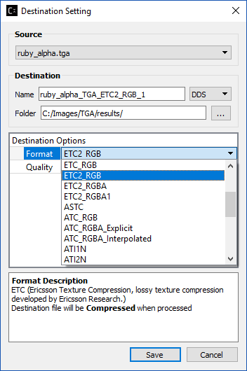
The results should look like the following when viewing the decompressed images:
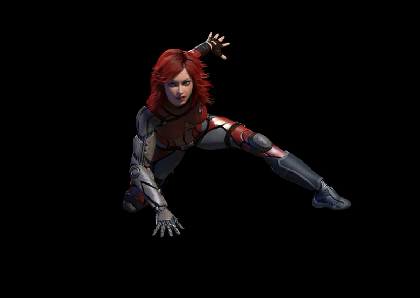
Ruby Image contains alpha channels and processed with ETC2_RGB
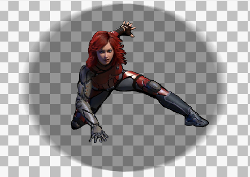
Ruby image processed with ETC2_RGBA
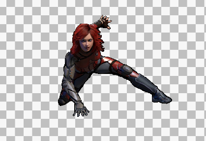
Ruby image processed with ETC2_RGBA1
ASTC¶
ASTC compression and decompression of various block sizes from 4x4 to 12x12 has been added to the SDK. Viewing compressed ASTC images using the OpenGL option requires GPU hardware that supports the ASTC format. CPU based views have no hardware dependencies.
Note: DirectX 11 does not support viewing ASTC and ETC2 compressed textures.
When ASTC is selected as a destination format, users can specify the numerical compression bitrate (e.g. 8) or block number XxY (e.g. 4x4) under the ASTC BlockRate section. Once specified, the closest bit rate and the block number will be computed and shown in the info window. This closest bit rate will be used for ASTC compression.
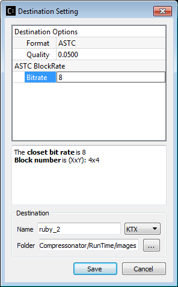 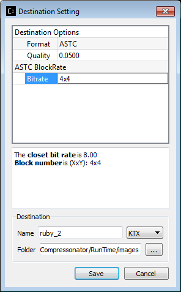
Selectable GPU or CPU based compressed image views¶
You can select how compressed images are viewed on the GUI View image tabs. The compressed textures are decompressed into RGBA_8888 format using either the Compressonator CPU based decompression algorithms or the GPU via a common interface for OpenGL (version 3.3 and up) or DirectX (only version 11 is supported).
Click on 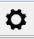 Set Application Options, Application Settings window pops up as shown below:
Users can choose to view the decompressed images using CPU, OpenGL, DirectX or Vulkan.
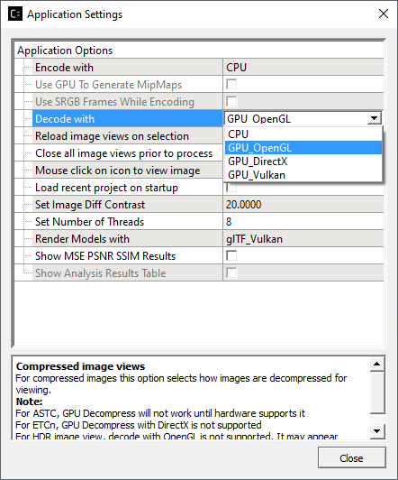
After setting the application options, click on the compressed image to view the image.
Example views of compressed BC7 image ruby_1.dds
CPU View
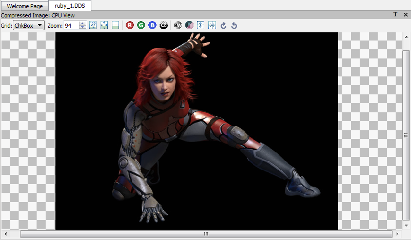
View using OpenGL
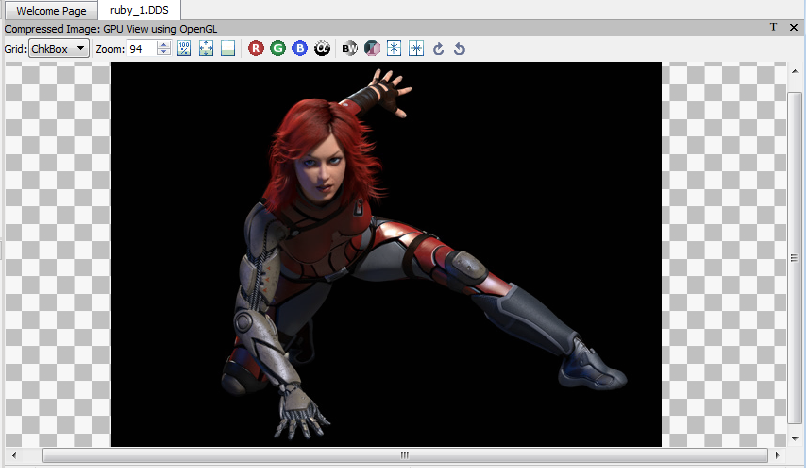
View using DirectX
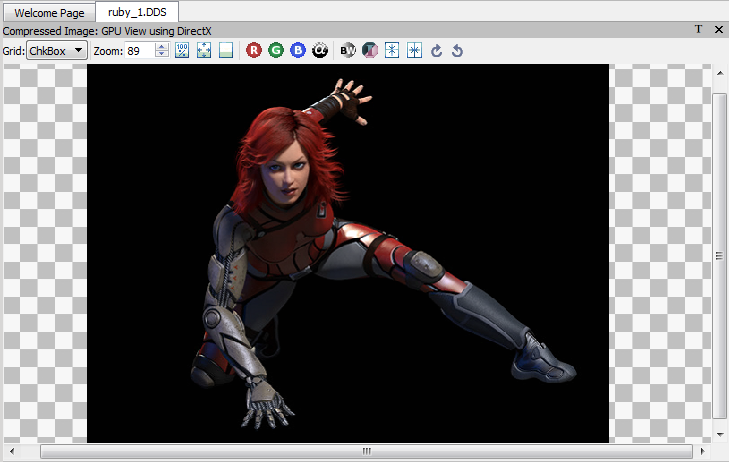
Users still able to generate image diff view with GPU as shown below:
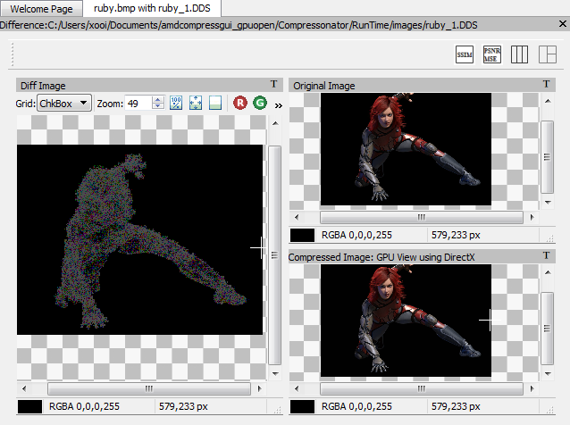